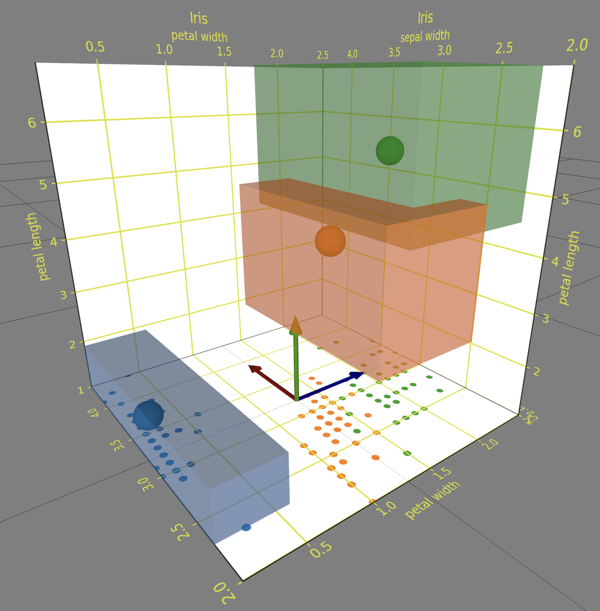
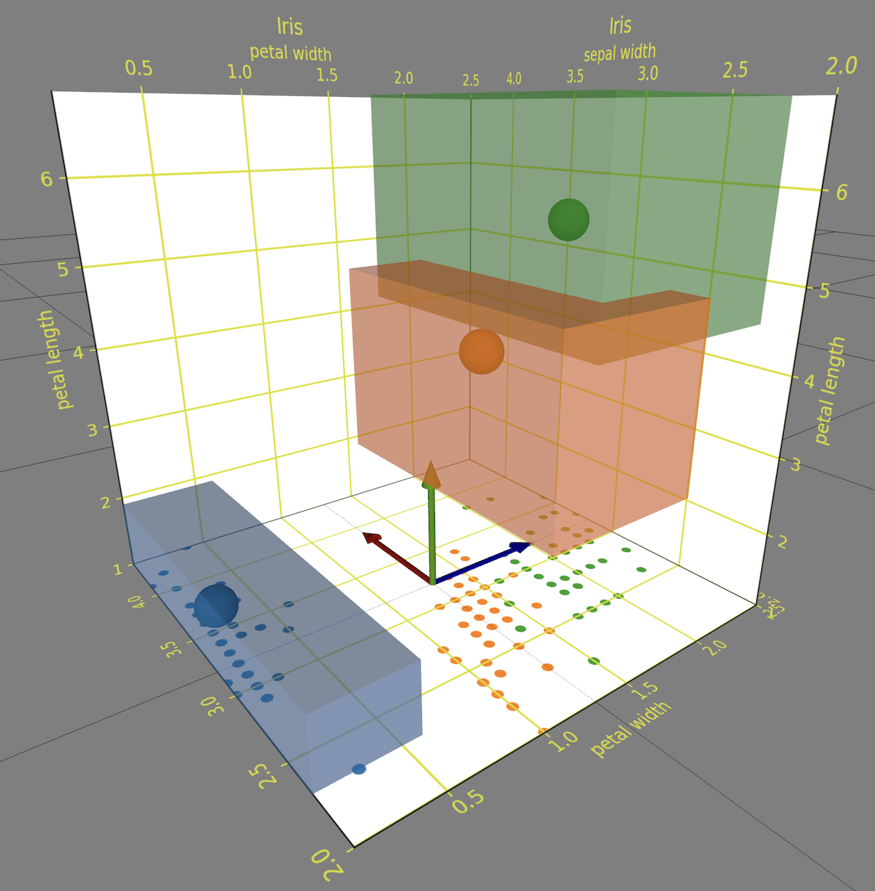

Data visualization generated with datarepgen.py:
georepgen.py
 
 

In SAXR 2D and 3D elements are arranged in a Data Viz Scenery consisting of:
List of scenes (containing DataReps) are interpreted as level of details, time series, or sequence in narrative 3D data viz. They become interactive by embedding SAXR data visualization into dynamic AR experiences controlled by declarative scripts.
See declarations of behavior and screen recoding videos run within the ARchi VR app. The behavior of SAXR data viz in the ARchi VR App is documented as Event-Condition-Action (ECA) diagrams:
SAXR is supporting a high-level grammar of graphics to define 2D and 3D sceneries in a JSON settings file. It is heavily inspired by Vega-Lite and Optomancy. The specifications in the JSON settings file serves as input to the datarepgen.pyscript that generates data reps and corresponding images used as assets for panels.
Example of a settings.json file:
{
"description": "3D data viz of Iris data set.",
"title": "Iris",
"stage": {
"width": 0.8,
"height": 0.8,
"depth": 0.8
},
"data": {
"url": "../data/iris.json"
},
"assetURL": "$SERVER/run/vis/",
"output": "viz.json",
"background": "#FFFFFF",
"gridColor": "#DDDE00",
"plot": "scatter",
"mark": "sphere",
"encoding": {
"x": {
"field": "sepal width"
},
"y": {
"field": "petal length"
},
"z": {
"field": "petal width"
},
"size": {
"value": 0.022
},
"color": {
"field": "class",
"title": "Iris Classes"
}
},
"panels": [
"xy",
"-xy",
"zy",
"-zy",
"xz",
"lc=_"
]
}
Data Reps are a collection of simple representations of data elements that will be visualized in the XR front-end application. They are encoded as JSON file, such as:
[
{
"type": "-XY",
"x": 0.0, "y": -0.014, "z": 0.319,
"w": 1.193, "d": 0, "h": 0.567,
"asset": "$SERVER/run/vis/-xy.png"
},
{
"type": "cylinder",
"x": 0.0707, "y": 0.0834, "z": -0.2028,
"w": 0.0151, "h": 0.1669, "d": 0.015,
"color": "blue"
}
]
The data fields of Data Reps are:
o, s, ^, v, D, P, X (Matplotlib symbols for 2D marks)"angle:45;start:90" for arc)Panel types are encoded by their name. If panel name is uppercase it will be presented as stage element, if lowercase as scene element.
xy: xy grid and axes-xy: opposite xy plane with inverse x axiszy: zy grid and axes-zy: opposite zy plane with inverse z axisxz: floor grid and axes+s: scatter plot+p: pie/donut chart"xy", "-xy", "xy+s", "XY", "ZY", "XZ+p"...Legends are panels as well. The legend name additionally encodes its pose and position.
lc: color legendlm: marker legend (shape categories)ls: size legend (size categories)lg: group legend (group fields mapped to colors)= flat| upright! upright and billboarding< leftside> rightsidev bottom^ top_ front- mid"lc", "lc=_", "lc=_<", "LC", "LC=_", "lg=_>", ...Predefined Color Palettes:
tab10OrangesGreysThe color palettes may be overwritten in the settings.json file.
All colormaps defined by Matplotlib can be used in SAXR settings.
"palette": {
"nominal": "tab10",
"quantitative": "Oranges",
"temporal": "Greys"
},
python datarepgen.py samples/iris
samples/iris/settings.json file as inputsamples/iris folder:
python export3D.py samples/iris
samples/iris/viz.json file as inputThe presentation of SAXR data reps is supported by:
How to fix transparency in USDZ/glTF export:

{kind=link}
{kind=link}
{kind=link}
{kind=link}
{kind=link}
{kind=link}
{kind=link}
{kind=link}
{kind=link}